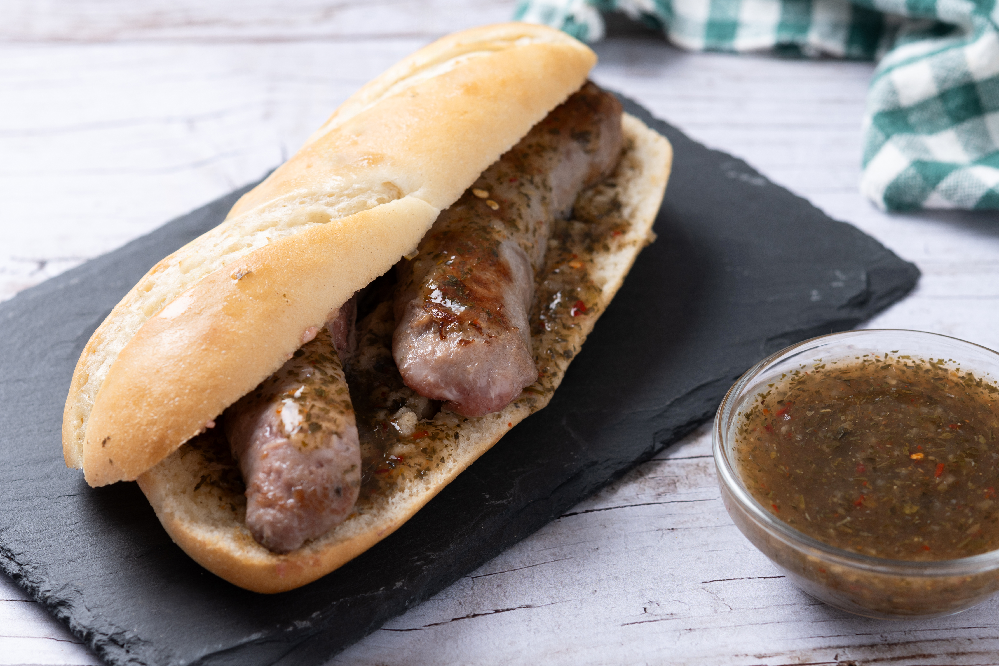

Boerewors Roll

Description
A South African street food staple originating from Durban. It consists of a hollowed-out loaf of white bread filled with a spicy, rich bean or meat curry.
Ingredients
- 1 Boerewors spiral (coriander and clove-spiced sausage)
- Fresh hot dog buns or long rolls
- Relish: 2 Onions (sliced), 1 can Braai Relish (or canned tomatoes + sugar + balsamic vinegar)
Steps
- The Relish: Sauté sliced onions until caramelized. Add the tomatoes and a pinch of sugar; simmer until thick.
- The Sausage: Grill the boerewors over coals (braai) or in a pan until browned and juicy. Do not overcook—it should stay succulent!
- Slice the buns, lightly toast them, place a piece of sausage inside, and smother with the relish.
Home